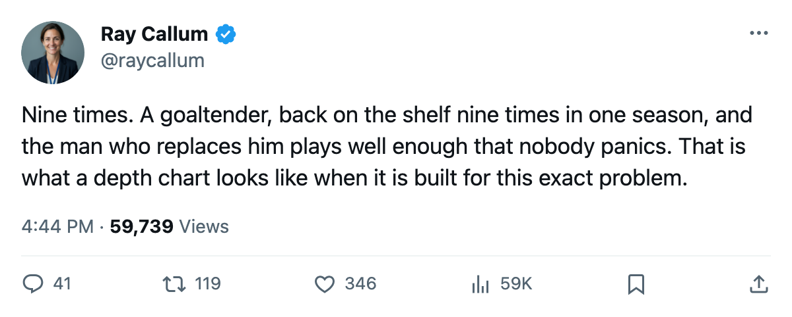

The Infirmary: Boston's goaltender has been on the shelf 9 times this season. He is back there again.
Andrew Raycroft enters his ninth injured list stint of 2004-05. Steve Shields moves up with 6 games left in the regular season.
 Ray CallumSenior correspondent · Home Ice Network
Ray CallumSenior correspondent · Home Ice Network
 Andrew Raycroft85 is on his ninth injured list stint of 2004-05. The league has him out until March 28. That is the same return date window that has brought him back eight times this season, and the cycle is the same each time: he goes down, a backup gets the start, he comes back, he goes down again.
Andrew Raycroft85 is on his ninth injured list stint of 2004-05. The league has him out until March 28. That is the same return date window that has brought him back eight times this season, and the cycle is the same each time: he goes down, a backup gets the start, he comes back, he goes down again.
Boston's lineup change for March 24 put  Steve Shields84 in the G1 slot and dressed Chris Mason71 for the first time since February. The result was a 5-1 loss to Toronto. Shields entered the night with 24 games played this season, 32 percent of Boston's workload. Mason had 7 appearances, 9 percent. Neither man had dressed together as the 1A and 1B on the same night before.
Steve Shields84 in the G1 slot and dressed Chris Mason71 for the first time since February. The result was a 5-1 loss to Toronto. Shields entered the night with 24 games played this season, 32 percent of Boston's workload. Mason had 7 appearances, 9 percent. Neither man had dressed together as the 1A and 1B on the same night before.
The  Boston Bruins carry 57 injured list designations this season, the most of any club in the league. No other team has reached 55. The 358 days those 57 spells cost Boston sit behind Tampa Bay's 601 and Pittsburgh's 594, but the frequency is what keeps reshaping the rotation, not the severity.
Boston Bruins carry 57 injured list designations this season, the most of any club in the league. No other team has reached 55. The 358 days those 57 spells cost Boston sit behind Tampa Bay's 601 and Pittsburgh's 594, but the frequency is what keeps reshaping the rotation, not the severity.
Raycroft's nine spells are the most by any single player in 2004-05.  Sean Burke84 of Phoenix has 8.
Sean Burke84 of Phoenix has 8.  Joe Thornton91 and Petr Chlup87 carry 7 each. Raycroft played 54 games despite missing time nine times; the arithmetic of that means the stints were short, some of them under two days, the league's return date arriving before a backup could settle in.
Joe Thornton91 and Petr Chlup87 carry 7 each. Raycroft played 54 games despite missing time nine times; the arithmetic of that means the stints were short, some of them under two days, the league's return date arriving before a backup could settle in.
 Bryan Berard82 is also on the shelf. The league designated his body part as a neck injury, onset between March 23 and March 25, return March 29. He played 74 overall on the Bureau's Book and dressed on Boston's third defensive pair before going down.
Bryan Berard82 is also on the shelf. The league designated his body part as a neck injury, onset between March 23 and March 25, return March 29. He played 74 overall on the Bureau's Book and dressed on Boston's third defensive pair before going down.
Six games decide the crease
Boston sits 5th in the Eastern Conference at 91 points, 12 above 8th-place New York Rangers and 12 below Carolina, who hold the same 91 with fewer regulation wins. The Bruins have 6 games left. Shields started the last one, Mason is the backup, and Raycroft's March 28 return leaves 5 games after that.
If Raycroft plays those 5, the season ends with him at 59 or more appearances and Shields and Mason split the remainder. If he goes down a 10th time, Shields has started 6 straight and the conversation shifts to who walks out in the first round. Boston's coach told reporters after the Toronto loss that Shields would start in Philadelphia on March 27.
The league files the return date but records no cause, neither for the neck designation nor for Raycroft's repeated stints.
